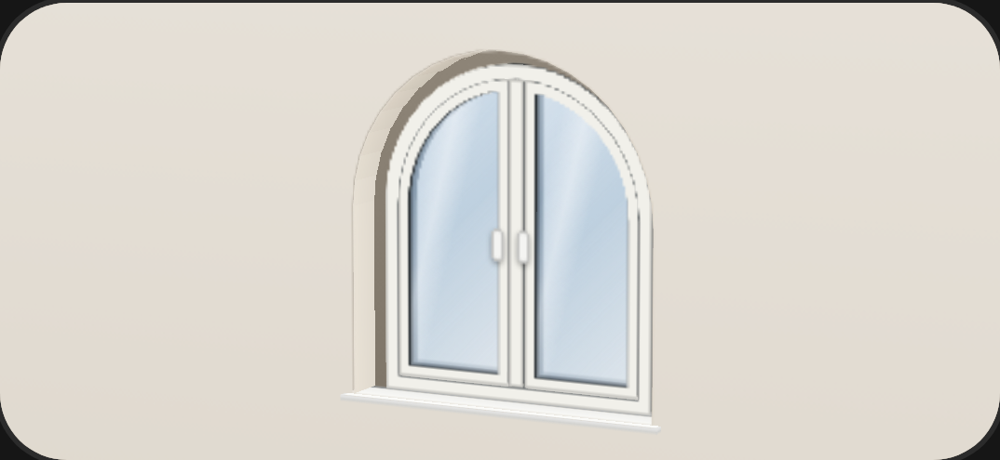
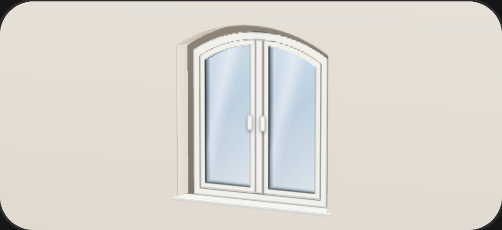
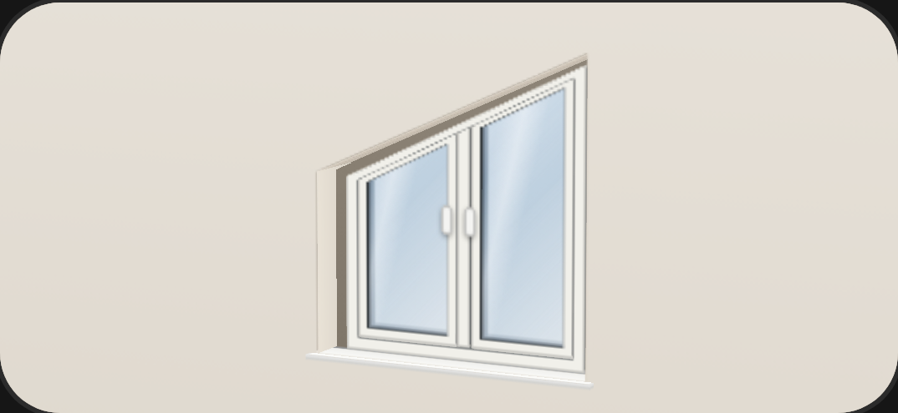
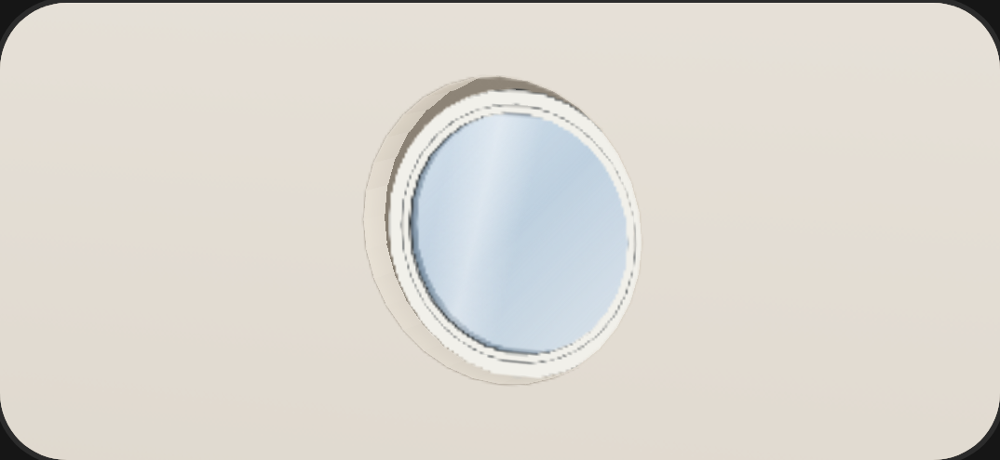
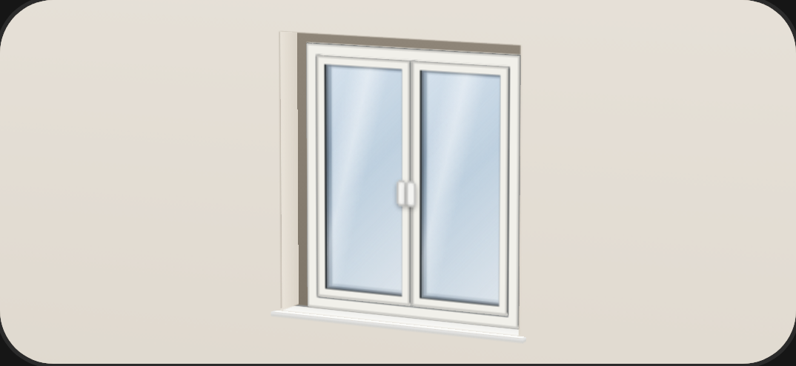
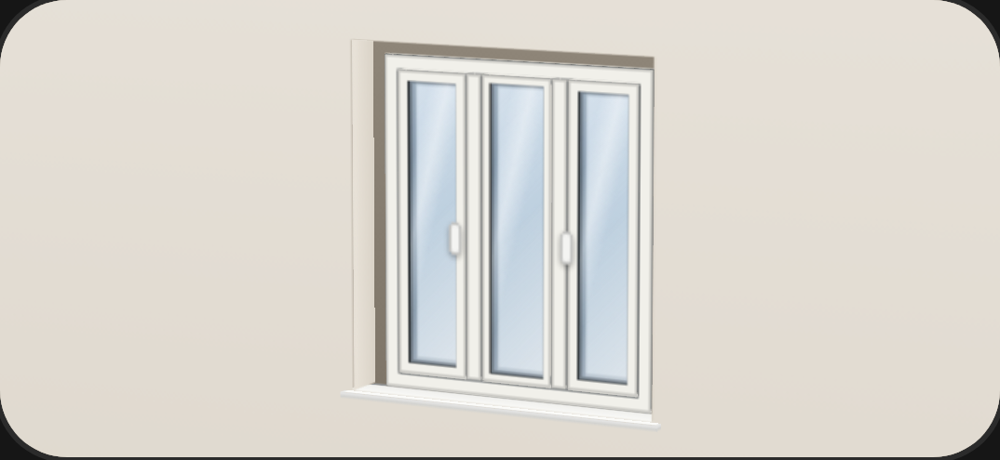
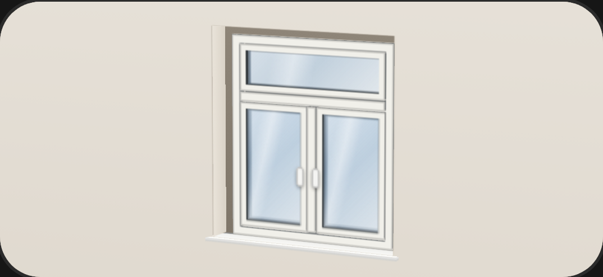
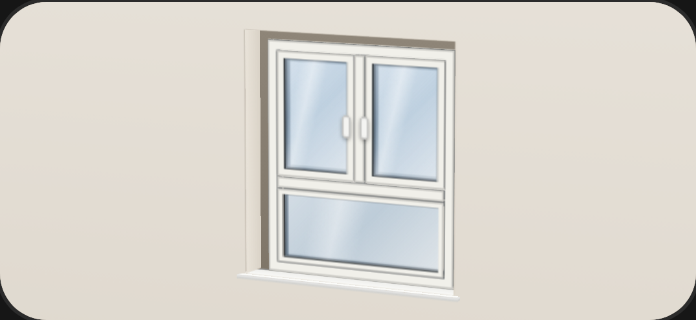
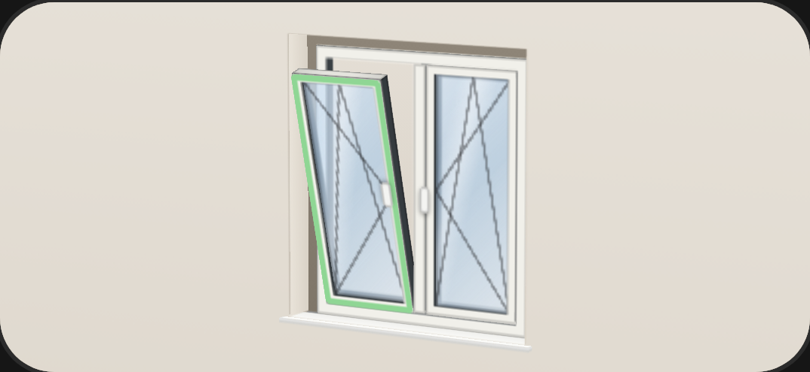

Form und Öffnung
Auch rund
und schräg.
Rundbogen, Segmentbogen, Schräg und Rund. Dazu Stulp, Oberlicht, Unterlicht und Sprossen.
- 1 bis 3 Flügel
- Dreh, Kipp, Dreh-Kipp
- DIN links oder rechts








